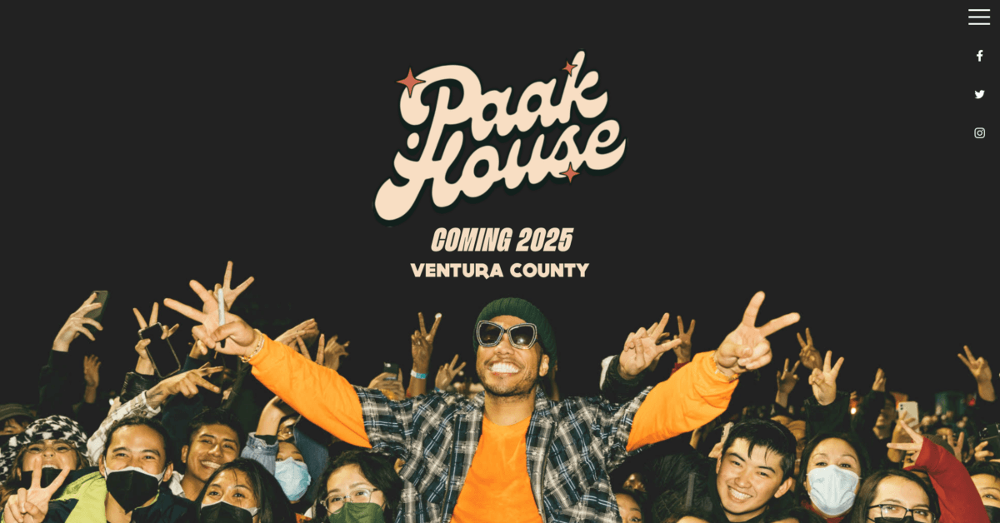

- The New York Moon
- Paak House
- Harvard Film Archive
- Crappy Explanation
- Kalso

1. The New York Moon uses a retro styled background with retro type design keeping it in the relm of a newspaper like website
2. Paak house utilizes retro colors throughout there website with tans, greens, reds, and off black
3. Harvard Film Archive keeps there website pretty bare bone close to minimalist but there whole website it focused on old films which gives the website a sort of retro style without it incorporating text faces or colors
4. Crappy Explanation uses the most retro design type of style from there constant changing background, the use of bright yellows and purples, with the bubbling of text faces and then a scrollable record folder full of retro colors.
5. Kalso's website uses a paper like texture within there text fonts, which rapidly change per era that is mentioned the website is a plain tan and black color pallet which brings out the old fashioned times